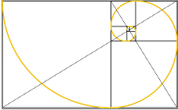

How can we compare two quantities? We might say "Boris weighs 20 pounds more than Cyril" or "Product A costs $100 less than Product B." These statements are examples of additive comparison, although we often use subtraction to describe the relationship:
\begin{gather*}
\blert{\text{Boris' weight} - \text{Cyril's weight} = \text{20 pounds}}\\
\blert{\text{Product B price} - \text{Product A price} = \text{\$100}}
\end{gather*}
But the significance of the difference between two quantities also depends on the size of the quantities themselves.
Example6.1.1.
Suppose Boris and Cyril are both world-class weight lifters. Cyril weighs 250 pounds and Boris weighs 270 pounds. The 20-pound difference between their weights is not that significant.
But what if Boris and Cyril are cats? Cyril weighs 10 pounds, and Boris weighs 30 pounds. So Boris weighs three times as much as Cyril, and is a very fat cat indeed.
In part (b) of Example 6.1.1, we used multiplication to compare Boris’ and Cyril’s weights: Boris weighs \(3\) times as much as Cyril, or
Boris weighs \(1.08\) times as much as Cyril. (We can also say that Boris weighs 8% more than Cyril.)
Checkpoint6.1.2.
Use multiplicative comparison to compare prices. In which case is the $100 price difference more significant?
You are shopping for a new sweater and find one that you really like at Chic Boutique for $125. Luckily, you find the same sweater at Sweater Barn for $25.
\begin{equation*}
\blert{\dfrac{\text{Price at Chic Boutique}}{\text{Price at Sweater Barn}} =~~~~~~~~~~~~~~~~~}
\end{equation*}
You are shopping for a new car. The model you want costs $25,000, but you can get it in red, your favorite color, for $25,100.
\begin{equation*}
\blert{\dfrac{\text{Price of new car in red}}{\text{Price of new car}} =~~~~~~~~~~~~~~~~~}
\end{equation*}
We can think of additive and multiplicative comparison as different ways to evaluate the relationship between two quantities. Additive comparison gives us the actual difference between two quantities. Multiplicative comparison takes into account their relative sizes.
Activity6.1.1.Comparing Quantities.
Jared and Carrie joined their department’s "Losing It" contest for slimming down and getting in shape. Here are their weights before and after the six-month trial.
Before
After
Jared
210 lbs
190 lbs
Carrie
135 lbs
120 lbs
Use additive comparison to compute each person’s weight loss in pounds.
Use multiplicative comparison to compute each person’s weight loss as a percentage of their initial weight.
Describe what each type of comparison tells you about Jared’s and Carrie’s weight loss.
Which person do you think did better in the contest? Why?
You are considering two different jobs, each of which will pay you $20,000 in your first year and $21,000 in your second year.
Use additive comparison to calculate the change in your salary after one year. If Job A calculates your new salary the same way each year, how much will you make in your third year? Your fourth year? Record your answers in the table below.
Year
Job A Salary
Job B Salary
1
20,000
20,000
2
\(\hphantom{000000}\)
\(\hphantom{000000}\)
3
\(\hphantom{000000}\)
\(\hphantom{000000}\)
4
\(\hphantom{000000}\)
\(\hphantom{000000}\)
Use multiplicative comparison to calculate the percent change in your salary after one year. If Job B calculates your new salary the same way each year, how much will you make in your third year? Your fourth year? Record your answers in the table above.
Which job offers the better salary increases?
Subsection6.1.2Ratios
We have looked at two ways of comparing quantities. For the rest of this lesson, we’ll concentrate on multiplicative comparison.
The quotient we used for multiplicative comparison is called a ratio. It tells us how many times greater one quantity is than another. If Boris weighs \(3\) times as much as Cyril, then the ratio of Boris’ weight to Cyril’s is 3 to 1.
Definition.
A ratio shows the relative sizes of two values by dividing one value into the other. The ratio of \(a\) to \(b\) is sometimes denoted by \(~a : b~\text{,}\) and it is computed as the quotient \(~\dfrac{a}{b}\text{.}\)
Example6.1.3.
There are 80 men in the state legislature and 16 women. To display the ratio of men to women as a quotient we would write
\begin{equation*}
\dfrac{\text{number of men}}{\text{number of women}} = \dfrac{80}{16}
\end{equation*}
Just as we do with fractions, we can write the ratio in simpler form by reducing the fraction.
\begin{equation*}
\dfrac{\text{number of men}}{\text{number of women}} = \dfrac{80}{16} =\dfrac{5}{2}
\end{equation*}
The ratio of men to women in the state legislature is \(\dfrac{5}{2}\text{.}\)
Note6.1.4.
To say that the ratio of men to women is \(\dfrac{5}{2}\) does NOT tell us that there are exactly 5 men and 2 women in the legislature! There could be 100 men and 40 women, or 185 men and 74 women, or many other combinations, because
You can check that all of these quotients equal 2.5. There are 2.5 times as many men as women in the state legislature.
A Quick Refresher.
Recall that we can use building factors to create new fractions with the same value, and we can reduce a fraction to a simpler form. The same is true for ratios. For example, we’ll find three different pairs of numbers whose ratio is \(\dfrac{4}{3}\text{.}\)
\(\blert{\text{Solution}}~~~\) This task is the same as finding three different fractions equivalent to \(\dfrac{4}{3}\text{.}\) Because \(\dfrac{4}{3}\) is already in lowest terms, we will build \(~\dfrac{4}{3}\) to find equivalent fractions. We can use any number we like (except zero) as the building factor.
\begin{align*}
\text{Using 2 as the building factor:} \hphantom{000} \amp \dfrac{4 \cdot \blert{2}}{3 \cdot \blert{2}} = \dfrac{8}{6}\\
\text{Using 3 as the building factor:} \hphantom{000} \amp \dfrac{4 \cdot \blert{3}}{3 \cdot \blert{3}} = \dfrac{12}{9}\\
\text{Using 4 as the building factor:} \hphantom{000} \amp \dfrac{4 \cdot \blert{4}}{3 \cdot \blert{4}} = \dfrac{16}{12}
\end{align*}
We have found the following pairs with the ratio 4 to 3:
\begin{equation*}
\text{8 and 6,} ~~~~ \text{12 and 9,} ~~~~ \text{16 and 12}
\end{equation*}
All these ratios are equivalent, but whenever possible we write ratios in simplest or reduced form.
Checkpoint6.1.5.
On a Saturday evening a restaurant found that 84 of its customers asked for seating inside, and 35 customers preferred to sit outside on the patio.
What was the ratio of inside diners to outside diners?
we can say that the ratio of nonsmokers to smokers in the previous Exercise is 2.4 to 1, or just 2.4. We usually express a ratio as a decimal number if the numbers being compared are decimal numbers.
Example6.1.6.
Major Motors budgeted 5.6 million dollars for research next year, and 3.5 million dollars for advertising. What is the ratio of the amount budgeted for advertising to the amount budgeted for research?
The ratio of amount budgeted for advertising to amount budgeted for research is
\begin{equation*}
\dfrac{\text{budget for advertising}}{\text{budget for research}} = \dfrac{3.5}{5.6} = 0.625
\end{equation*}
(You might also recognize this ratio as \(\dfrac{5}{8}\text{.}\))
Checkpoint6.1.7.
During the second quarter of 2015, consumers bought 271 million Android phones and 48.1 million iPhones. What was the ratio of Android phones sold to iPhones sold? Round your answer to the nearest tenth.
In the 2015-2016 season, Kobe Bryant attempted 281 free throws and made 232 of them. What is the ratio of his successes to his attempts?
Write your answer in the form \(a:b\text{.}\)
Write your answer in the form of a common fraction.
Write your answer in the form of a decimal fraction, rounding to three decimal places.
Write your answer as a percent.
Here are the free-throw statistics for three other basketball greats in their last season of play. (FT stands for free throws, and FTA stands for free throw attempts.) Complete the table and compare the results. Who had the best free throw record, in your opinion?
Player
FT
FTA
Ratio
Decimal
Percent
Wilt Chamberlain
232
455
\(\hphantom{000}\)
\(\hphantom{000}\)
\(\hphantom{000}\)
Kareen Abdul Jabbar
122
165
\(\hphantom{000}\)
\(\hphantom{000}\)
\(\hphantom{000}\)
Michael Jordan
324
366
\(\hphantom{000}\)
\(\hphantom{000}\)
\(\hphantom{000}\)
Note6.1.8.
Is a ratio a fraction? Sometimes. We think of fractions as comparing a part to the whole, \(\dfrac{\text{part}}{\text{whole}}\text{,}\) but a ratio may also compare one part to another part.
Example6.1.9.
25% of middle school teachers are male.
What fraction of middle school teachers are male?
What is the ratio of female middle school teachers to male middle school teachers?
As a fraction, 25% is 0.25, so \(\dfrac{1}{4}\) of middle school teachers are male.
One out of four middle school teachers are male, so three out of four are female. The ratio of female teachers to male teachers is 3 to 1, or \(\dfrac{3}{1}\text{.}\)
Checkpoint6.1.10.
40% of high school teachers are male.
What fraction of high school teachers are male?
What is the ratio of female high school teachers to male high school teachers?
Another important use of ratios is to compare quantities that are NOT parts of a whole.
Example6.1.11.
When Paolo makes coffee in the morning, he uses 3 scoops of coffee beans and 5 cups of water. Raul uses 5 scoops of coffee beans and 8 cups of water. Whose coffee is stronger?
City Health Club has 144 active members and 15 elliptical trainers. Fitness First has 123 active members and 12 elliptical trainers. At which club might you have to wait longer to use an elliptical trainer?
City Health Club: \(~~~~~~~~~~\dfrac{\text{members}}{\text{trainers}} =\)
A rate is just a ratio that compares quantities with different units. You are familiar with many rates already. You might hear that a certain car gets gas mileage of 28 miles per gallon, or that bananas cost 55 cents per pound. Because "per" indicates division, we see that
\begin{equation*}
\text{28 miles per gallon} ~~~~~~ \text{means} ~~~~~~ \dfrac{\text{28 miles}}{\text{1 gallon}}
\end{equation*}
You can think of "per" as meaning "for each" or "for every," so that "28 miles per gallon" means that you can travel 28 miles for every gallon of gas in the tank, and "55 cents per pound" means that each pound costs 55 cents.
Example6.1.13.
Kayla drove 130 miles in \(2\frac{1}{2}\) hours. Compute the ratio of the distance she traveled to the time it took.
What is the every-day interpretation of the ratio in part (a)?
We can interpret the simplified ratio as "52 miles per hour." It gives us the average speed at which Kayla traveled. For each hour that elapsed, Kayla traveled 52 miles.
The simplified rate in Example 6.1.3 is called a unit rate because it gives us the distance Kayla traveled in one hour. We can use the unit rate to find the distance Kayla would travel (at the same rate) over other time periods. For example, in 3 hours Kayla would travel
Here is one of those tricky places where an English word can mean more than one thing in mathematics. Although a rate describes a ratio of quantities with different units, such as miles/hours, the "unit" in unit rate means 1, so that the rate \(\dfrac{\text{130 miles}}{\text{2.5 hours}}\) is simplified to the unit rate \(\dfrac{52}{\blert{1}} \dfrac{\text{miles}}{\blert{1~}\text{hour}}\text{.}\)
Checkpoint6.1.15.
Jamal worked for five hours on Tuesday and earned $132 (before taxes).
What was his pay rate, in dollars per hour?
How much did Jamal earn working 8 hours on Wednesday?
What operation do we use for multiplicative comparison?
2.
Which type of comparison takes into account the relative sizes of the two quantities compared?
Which type of comparison gives the actual difference in the sizes of two quantities?
Exercise Group.
For Problems 3-6, decide whether additive or multiplicative comparison is appropriate.
If you choose additive comparison, write a difference and a sentence to describe it.
If you choose multiplicative comparison, write a quotient and a sentence to describe it.
3.
Ravi has a photograph that measures 6 inches by 4 inches. He would like to paint an enlargement of the picture. What should be the relationship between the length and width of the painting?
4.
Amy was 28 years old when she got married, and her husband, Greg, was 35. What is the relationship between their ages now?
5.
The water is 12 feet deep at the deep end of the pool and 3 feet deep at the shallow end. Last week we discovered a leak in the pool, because the water level had dropped by several inches. What is the relationship between the depth of the water at the deep and shallow ends now?
6.
A random sample of voters in Clark County found 72 voters in favor of Senator Foghorn and 81 in favor of his challenger, Justine Honest. What do you expect will be the relationship between their votes in the actual election?
7.
What does the notation \(a:b\) mean?
How do we compute a ratio?
8.
How might a ratio be used where a fraction would not?
9.
Find three pairs of numbers whose ratio is \(\dfrac{5}{8}\text{.}\)
10.
Find three pairs of numbers whose ratio is \(\dfrac{7}{2}\text{.}\)
11.
If there are more sheep than goats, what can you say about the ratio of sheep to goats?
12.
The ratio of oak trees to pine trees in the park is \(1:1\text{.}\) What does this tell you about the numbers of oak trees and pine trees in the park?
13.
For every three sailboats registered to use the lake, there are four motorboats.
What is the ratio of sailboats to motorboats?
What is the ratio of motorboats to sailboats?
What fraction of all the boats registered are sailboats? What fraction are motorboats?
If there are 36 sailboats registered, how many motorboats are registered?
If there are 60 motorboats registered, how many sailboats are registered?
14.
For every nine girls in a Brownie troop, there must be two adults.
What is the ratio of girls to adults?
What is the ratio of adults to girls?
What fraction of all Brownies are adults? What fraction are girls?
If there are 45 girls who want to be Brownies, how many adults are needed?
If 12 adults are willing to be Brownie leaders, how many girls can be Brownies?
Exercise Group.
For Problems 15-22, write each ratio as a fraction in simplest form.
15.
Cary’s math book has 248 pages of text and 186 pages of exercises. What is the ratio of text to exercises in the book?
16.
Emmet spends $720 a month for housing and $500 a month for food. What is the ratio of his food expenses to his housing expenses?
17.
A typical American diet includes 920 calories per day from carbohydrates, 240 calories from protein, and 840 calories from fat.
What is the ratio of calories from fat to calories from protein?
What is the ratio of calories from protein to calories from carbohydrates?
18.
A recommended low-fat diet includes 1190 calories per day from carbohydrates, 170 caloriesfrom protein, and 340 calories from fat.
What is the ratio of calories from fat to calories from protein?
What is the ratio of calories from fat to calories from carbohydrates?
19.
A recipe for cranberry sangria calls for, among other ingredients, 48 ounces of cranberry juice and 32 ounces of red wine. You would like to make a smaller batch of cranberry sangria, so you need to know the ratio of cranberry juice to red wine. What is that ratio?
20.
A recipe in a German cook book calls for 220 grams of sugar and 385 grams of flour. What is the ratio of flour to sugar needed in the recipe?
21.
The quality control department at the Lighten Up company finds that a shipment of 4500 light bulbs includes 54 defective bulbs.
What is the ratio of defective bulbs to the total number of bulbs?
What is the ratio of good bulbs to defective bulbs?
What percent of the bulbs are defective?
22.
Village Miller, Inc. distributed 12,000 boxes of Oat Toasties last month, and 15 of the boxes contain a certificate for breakfast in Paris.
What is the ratio of certificates to the total number of boxes?
What is the ratio of plain boxes to prize boxes?
What percent of the boxes contain certificates?
23.
How can we convert a common fraction into a decimal fraction?
How can we convert a decimal fraction into a percent?
24.
What is a rate?
What is a unit rate?
Exercise Group.
For Problems 25-34, write each ratio as a decimal fraction. If necessary, round your answers to three decimal places.
25.
The average American eighth-grader spends 5.6 hours per week on homework and 21.4 hours per week watching TV. What is the ratio of time spent on homework to time spent watching TV?
26.
The average American man spends 26.7 hours per week watching TV and 7.2 hours per week eating. What is the ratio of time spent eating to time spent watching TV?
27.
On a scale drawing of a new public library, the length of the lobby is 14.4 centimeters and its width is 9 centimeters. The ratio of the width to the length will be the same for the actual lobby. What is that ratio?
28.
A scale model of Big Ben is 20 centimeters tall and the clock face is 1.5 centimeters wide. What is the ratio of the width of the clock face to the height of the tower?
29.
The Crane County commissioners have budgeted 24.9 million dollars for education and 41.5 million dollars for law enforcement. What is the ratio of funds budgeted for education to funds budgeted for law enforcement?
30.
In 2014, Americans spent 216 billion dollars on clothing and 442.4 billion dollars on medical care. Compute the ratio, to the nearest thousandth, of amount spent on clothing to amount spent on medical care.
31.
Hermann and Harriet joined a weight loss contest. In six months, Hermann’s weight dropped from 225 pounds to 200 pounds, and Harriet’s weight dropped from 140 pounds to 120 pounds. Which of them was the more successful dieter?
32.
Jackie invested $500 in Comco stock and earned $27 in dividends. Petra invested $800 in Valcom stock and earned $48 in dividends. Which stock was the better investment?
33.
The rectangle in the figure is called a Golden Rectangle, and the ratio of its length to its width is called the Golden Ratio. Rectangles of this shape are considered to be the most visually pleasing. If the dimensions of a Golden Rectangle are 8.9 centimeters and 5.5 centimeters, calculate the Golden Ratio.

34.
Measure your height, and then measure the height from the floor to your navel. For most people, the ratio of their height to their navel height is approximately equal to the Golden Ratio. Compute the ratio for your own height. Is the result close to the value you calculated in Problem 33?
Exercise Group.
For Problems 35-44, write a rate to describe the situation. If necessary, round your answers to three decimal places.
35.
An experimental commuter minivan can travel 576 miles on a 12-gallon tank of gas.
What is its fuel efficiency, in miles per gallon?
How far can the minivan travel on 15 gallons of gas?
36.
Maryellen’s family used 1044 kilowatt hours of electricity during the last billing period, which was for 58 days.
What was their rate of energy consumption, in kilowatt hours per day?
How much energy would they use in one month of 30 days?
37.
Liesl jogs 5 miles in 40 minutes.
What is her speed in minutes per mile?
What is her speed in miles per minute?
38.
Nabil read 60 pages in 1 hour and 32 minutes.
What was his reading speed in minutes per page?
What was his reading speed in pages per minute?
39.
Harry tiled a 12-foot by 15-foot kitchen in \(2\frac{1}{2}\) hours. How fast did he work, in square feet per hour?
40.
Rita worked on a needlework chair seat for a total of 32 hours. If the finished piece measures 15 inches by 16 inches, how fast did Rita work, in square inches per hour?
41.
Maurice paid $29.82, including sales tax, for a $28 sweater.
What was the sales tax rate, in cents per dollar?
Express the sales tax rate as a percentage.
What is the tax on a $200 purchase?
42.
Nicole paid $66.24 to fill her car with gasoline. Of that amount, $11.04 was for taxes.
What was the tax rate, in cents per dollar?
Express the tax rate as a percentage.
What is the tax on $20 worth of gasoline?
43.
Armand made $192 for 15 hours of work last week.
Write his rate of pay as a ratio.
Calculate Armand’s rate of pay, in dollars per hour.
44.
Beaverhead is the largest county in Montana, with an area of 5543 square miles. The population of Beaverhead County is 8790.
Write the ratio of people to area in Beaverhead County.
What is the population density, in people per square mile? Round your answer to tenths.